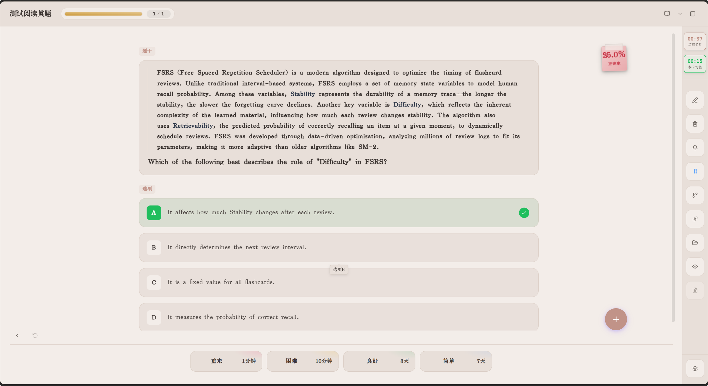
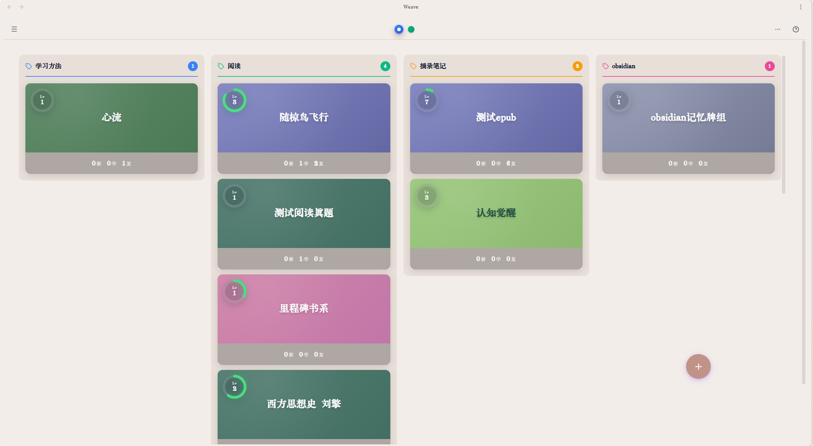
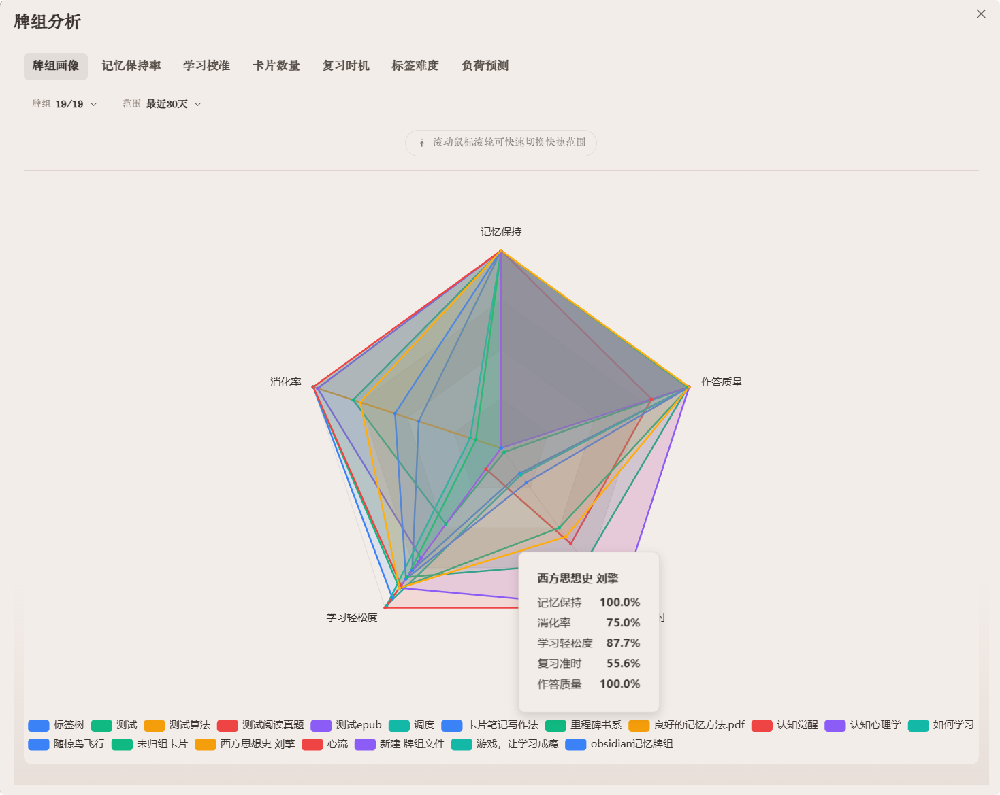
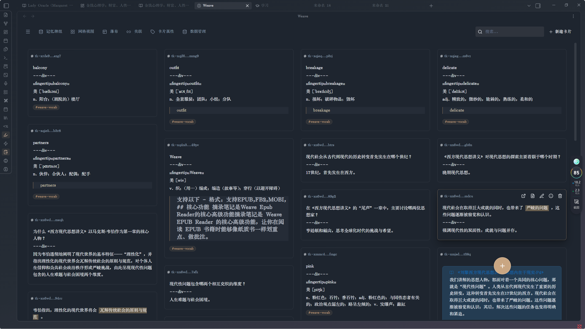

Obsidian 插件系列
在 Obsidian 里，安静地完成长期学习
01 · 记忆与检验
Weave Deck
摘录、制卡、复习、测验、溯源。学习卡片独立存放，复习时仍可回到原文语境。
- FSRS6 间隔复习，问答 / 挖空 / 填空 / 选择
- 正式牌组、涌现牌组；表格、网格、看板与时间线视图
- AI 制卡、CSV / APKG 互通与备份
- 题库、模拟考试、记忆率曲线
- ……以及更多





02 · 阅读现场
Weave Reader
在 Obsidian 里沉浸阅读：英著词汇辅助、摘录可引用到任意文件与卡片，并能溯源回到正文、反向找到相关摘录。
- EPUB 及常见电子书格式，高亮与正文回显
- 英著阅读词汇辅助模式
- 任意文件引用摘录卡片，溯源正文阅读
- 反向索引：从摘录回到引用它的笔记与文章
- ……以及更多
03 · 阅读节奏
Incremental Reading
把收藏变成可排期的阅读点。目前处于增量阅读探索性设计第二阶段；随 Weave 系列购买，不单独售卖。
- 阅读点、专题、增量阅读日历
- 网页、双链、PDF++、EPUB 等统一入队
- 每日上限、续读与下次出现安排
- ……以及更多
价格
基础体验永久可用。高级支持一次性买断：永久授权、邮箱绑定、支持五台设备。
Weave 系列激活码
三款插件高级支持
74 元
- Weave Deck
- Weave Reader
- Incremental Reading
- 支持五台设备
- 永久授权
- 邮箱绑定
- 一次性买断
独立阅读器
仅 Weave Reader
30 元
- 仅限于阅读器
- 支持五台设备
- 永久授权
- 邮箱绑定
- 一次性买断
增量阅读
不单独售卖
随系列购买
- 请选择系列激活码
- 购后三款一并可用
- 支持五台设备
- 永久授权
交流群
欢迎加入 QQ / 微信群交流与反馈。
No public groups yet. Please contact the developer by email for feedback.
公开群
反馈群
Obsidian-Weave 系列公开交流与问题反馈。
加入反馈群内测群 · 购后
内测群②
仅限已购买 Weave 系列全家桶的用户进入。
加入内测群微信群 · 购后
微信群
仅限已购买 Weave 系列全家桶的用户进入。
No public chat groups are available for international users at the moment. Please email the developer for questions and feedback.
tutaoyuan8@outlook.com
Email the developer